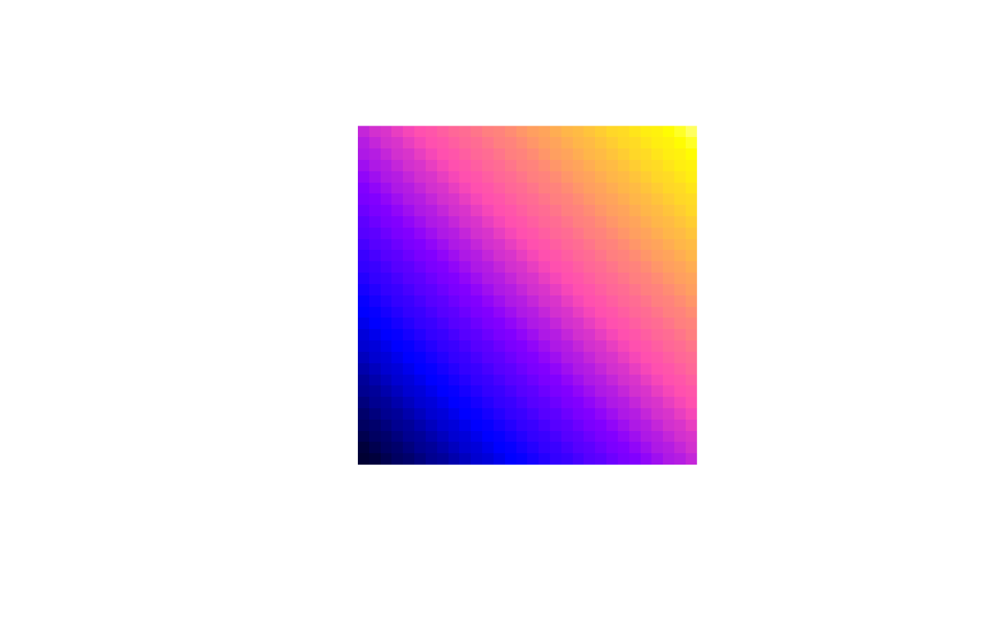

bpy.colors.RdCreate a vector of `n' ``contiguous'' colors.
bpy.colors(n = 100, cutoff.tails = 0.1, alpha = 1.0)number of colors (>= 1) to be in the palette
tail fraction to be cut off on each side. If 0, this palette runs from black to white; by cutting off the tails, it runs from blue to yellow, which looks nicer.
numeric; alpha transparency, 0 is fully transparent, 1 is opaque.
A character vector, `cv', of color names. This can be used either to create a user-defined color palette for subsequent graphics by `palette(cv)', a `col=' specification in graphics functions or in `par'.
This color map prints well on black-and-white printers.
bpy.colors(10)
#> [1] "#000033FF" "#000099FF" "#0000FFFF" "#5000FFFF" "#9F0FF0FF" "#EF42BDFF"
#> [7] "#FF758AFF" "#FFA857FF" "#FFDB24FF" "#FFFF60FF"
p <- expand.grid(x=1:30,y=1:30)
p$z <- p$x + p$y
coordinates(p) <- c("x", "y")
gridded(p) <- TRUE
image(p, col = bpy.colors(100), asp = 1)

# require(lattice)
# trellis.par.set("regions", list(col=bpy.colors())) # make this default pallette